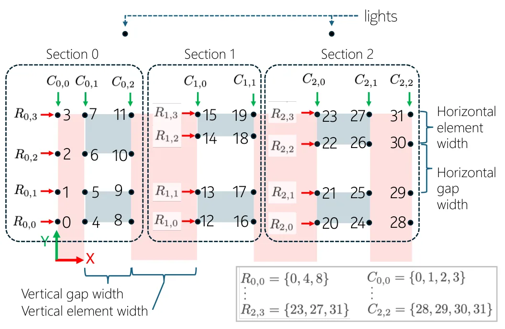
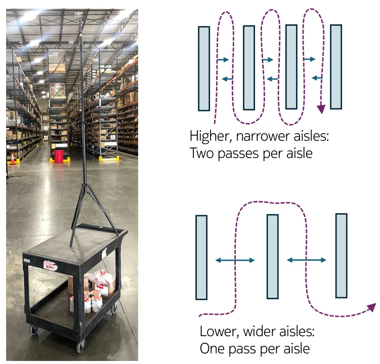
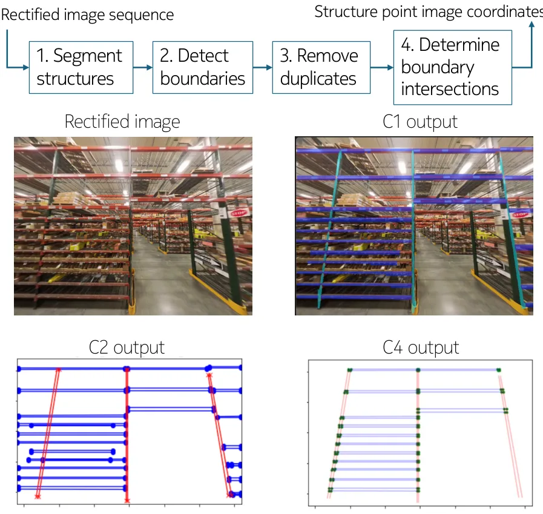
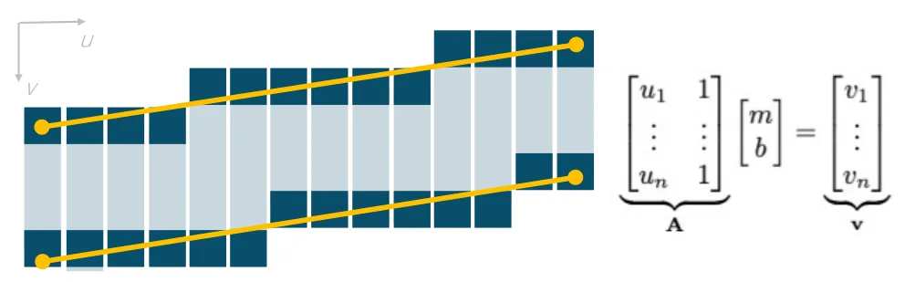
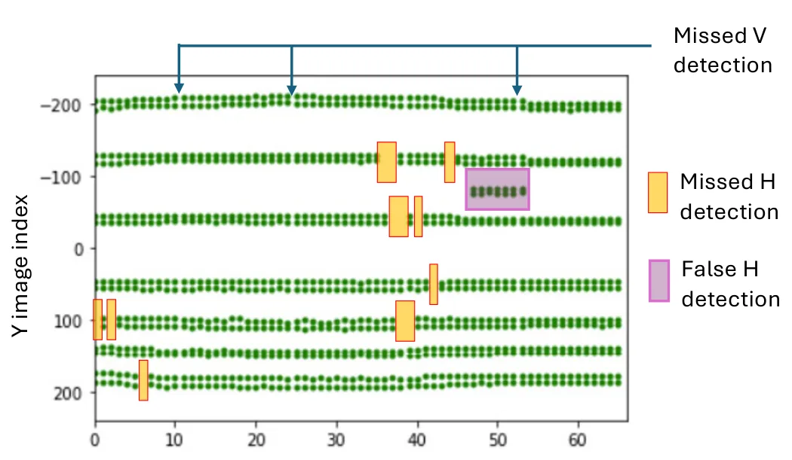

SAVMap：由全景视频生成大规模 2.5D Manhattan 语义线框地图SAVMap: Structure-Aided Visual Mapping of Large-Scale 2.5D Manhattan Wireframes from Panoramic Video
对工业视觉建图、结构约束 SfM 和轻量数字孪生很有参考价值。
一句话工作总结
利用语义结构点和 Manhattan 约束，从全景视频构建大规模工业环境线框地图。
摘要
SAVMap 使用单个全景视频相机为仓库货架和灯具结构生成语义线框地图。方法从全景视频中抽取货架和天花板视角图像，用语义分割提取结构特征点并跨帧跟踪，再通过考虑 Manhattan grid 等真实几何关系的约束 SfM 生成 3D 线框点。论文在 46 排货架的大仓库中从约一小时视频生成 5000 多个 shelf elements，平均绝对误差 4.8 cm。
Precise 3D representations of industrial environments enable tasks such as robot localization and digital twin generation. We propose SAVMap, a method for generating a semantic wireframe map of warehouse shelf and light structures using only a panoramic video camera as the sensor input. Sequences of rectified images with shelf and ceiling-facing views are extracted from a panoramic video captured along the warehouse aisles. Using a semantic segmentation network front end, a set of sparse, semantic structure feature points (e.g., corners of shelf structures, centers of lights) are extracted from each image and tracked across the sequences. By accounting for real-world geometric relationships among the points such as Manhattan grids, a constrained structure-from-motion algorithm yields the 3D points that form a wireframe map. We demonstrate the scalability and accuracy of our proposal in a warehouse with 46 shelving rows, each with faces spanning 55\,m by 7\,m. From an hour of panoramic video content, we create wireframe maps for over 5000 shelf elements across the rows, achieving an aggregate mean absolute error of 4.8\,cm with respect to ground-truth.
中文解读摘录
图表/页面预览

{kind=link}

{kind=link}

{kind=link}

{kind=link}

{kind=link}
